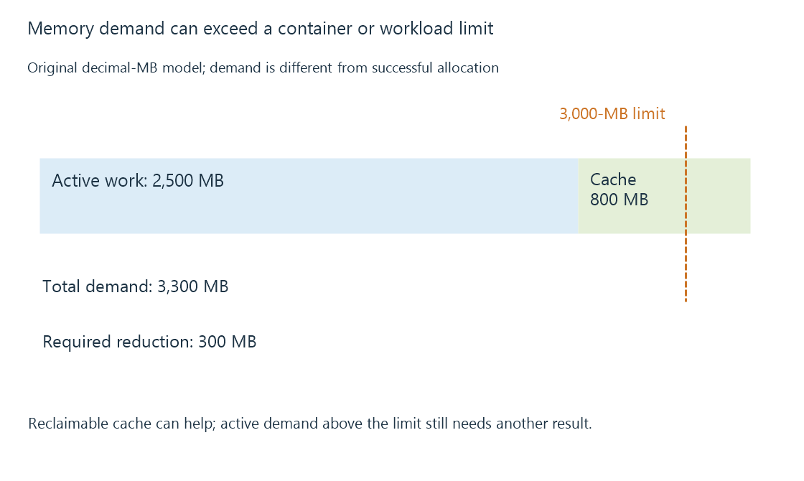

RAM, reclaim and memory pressure
Memory pressure occurs when useful allocations compete with available memory, causing reclaim, swapping, stalls or allocation failure within the applicable scope.
RAM holds active application data, temporary working memory and reusable caches. A server can appear to use most of its RAM without being under harmful pressure, because some of that memory can be reclaimed when needed.
Pressure is the cost of satisfying demand under the available memory constraints. It can appear as reclaim work, swapping, stalled tasks or failed allocations—not just a large “used” number.
Different allocations have different lifetimes
| Memory role | What can happen under pressure |
|---|---|
| File pages retained for reuse | Clean pages can often be discarded and read again later |
| Application objects still in use | The application must retain or release them according to its lifecycle |
| Dirty cached file data | Writeback may be needed before reclamation |
| Memory-backed temporary files | Their pages count against relevant memory resources and may use swap |
| Native codec or driver allocations | Accounting and release depend on the component and platform |
A discarded clean artwork page can be fetched again. Reclaiming it still has a performance cost if it is immediately needed again. Repeatedly evicting and reloading useful data can make a workload slow despite little permanent growth.
A working set can exceed its scope
An original memory model has a 3,000-MB limit:
Active application and native work: 2,500 MB
Reusable clean cache: 800 MB
Combined demand: 3,300 MB
Required reduction to fit: 300 MB
The arithmetic does not imply that the runtime can always free exactly 300 MB promptly. If enough clean cache can be reclaimed, the workload may continue with more misses. If the genuinely required active allocations exceed the limit, cache eviction alone cannot solve the shortage.

Stalls describe the performance effect
Linux pressure stall information reports time during which work was delayed by resource pressure. For memory, “some” and “full” pressure have different task-scope meanings; they are not percentages of bytes occupied.
In a fictional 100-ms observation, 20 ms with at least one relevant task stalled gives a 20% “some” interval for that declared model. It says something about delay, while an occupied-memory counter says something about capacity.
A server can also suffer from swapping without growing indefinitely. If frequently needed pages repeatedly move between RAM and slower storage, useful work spends time waiting for them.
Containers have another memory boundary
A container's memory accounting can include application allocations and charged file cache. Its own hard limit can be reached while the host still has free RAM. A host-wide memory graph therefore does not prove that the container has headroom.
Failure can occur through different allocation and out-of-memory paths depending on the platform. A resource limit is not a promise that every process can use that entire amount independently.
For Emby, consider the number of active encoders, scans and temporary-memory consumers together. Memory pressure explains the shared-workload delay when the evidence shows reclaim, stalls or allocation failure; it should not be inferred solely from a full-looking cache graph.
See Also
- Storage caches: reusable reads and deferred writes
- Temporary storage and RAM disks
- Container CPU and memory limits